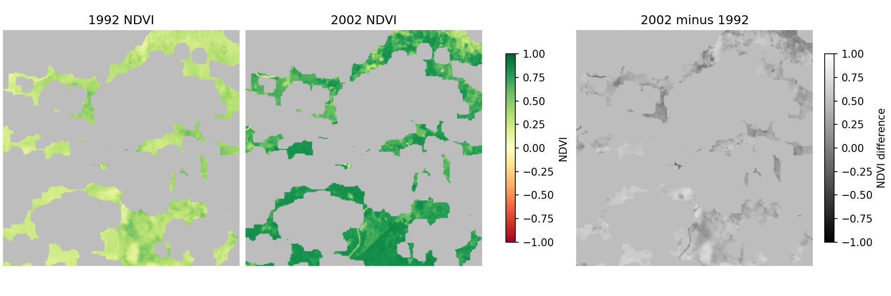

CSE 620B: Computer Vision for Remote Sensing
Miami University | John C. Femiani
Week 10
Change Detection: lecture PDFs, Colab notebooks, and flicker comparison
Hyperspectral Data Analysis: lecture PDFs and spectral-mixture notebook

Rondonia NDVI teaching sample. Only 24.3% of the crop is comparable; this reproduces the calculation, not the textbook's exact scenes.
Earlier Materials
Raster data notebook
Vector data notebook
Land-cover classification with nearest neighbors
Repository and course schedule